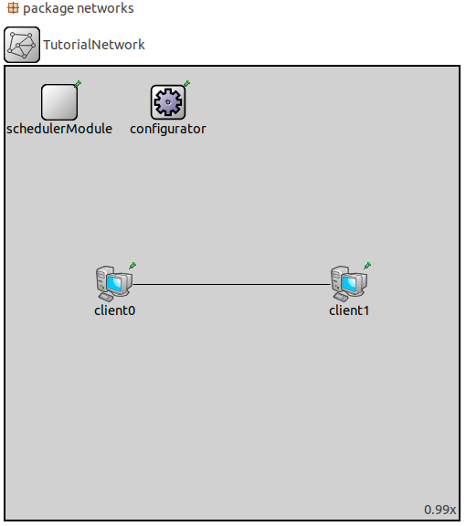
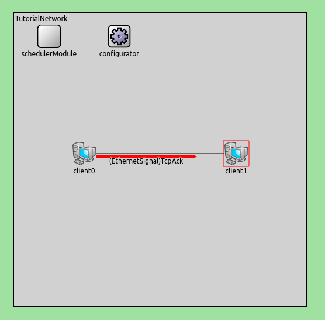
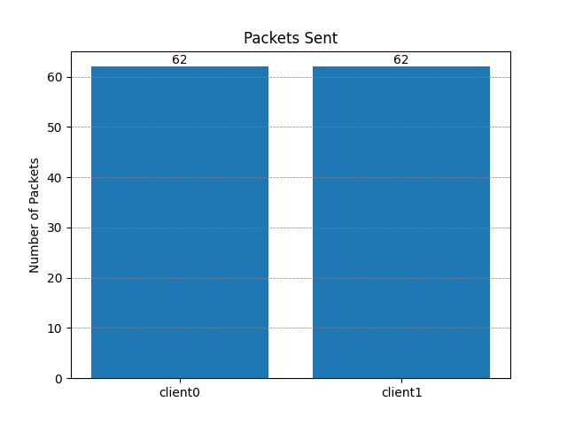

Tutorial
In this tutorial, you will be guided through multiple examples, on how cosima integrates the (communication) simulator OMNeT++ into the co-simulation framework mosaik and on how to set up your own scenarios and simulators. The goal is to provide a basic understanding on how agents communicate within the simulation, as well as showing how agents are connected to mosaik through a simple scenario.
The tutorial is based on scenarios, which you can find under cosima_core/scenarios/tutorial/ in the official
cosima gitlab repository.
To check if your installation (for details see README.md) was successful,
you can run cosima_core/scenarios/tutorial/simulators_and_connection_to_omnet.py.
However, this requires a basic understanding of how ONNeT++ works. Therefore, it is recommended, that new users first try out the TicToc example from OMNeT’s website. Additionally, this tutorial will later provide an optional part, that will focus on the configuration and creation of a simple network, that can be used to test our scenario. In addition to knowledge of OMNeT++, it is advised to have a basic understanding of the programming language python.
Part 1: Simulators and connection to OMNeT++
The first part of the tutorial is about learning the configuration of a simple scenario and the implementation of an agent simulator by means of an example. The util functions provided by cosima for simplification purposes are not used here yet, in order to learn the general functionality first.
Create a simple Agent
Initialization
The Process of managing messages is realised by entities of agents.
That means, to send and receive messages, we first have to create an agent, that is capable of doing so.
To do that, first create a python file under cosima_core/simulators named agent_simulator.py.
Next put the following lines into that file:
1import mosaik_api
2
3META = {
4 'api_version': '3.0',
5 'type': 'event-based',
6 'models': {
7 'SimpleAgentModel': {
8 'public': True,
9 'params': [],
10 'attrs': ['message'],
11 },
12 },
13}
14
15class SimpleAgent(mosaik_api.Simulator):
16 def __init__(self):
17 super().__init__(META)
18 self._sid = None
19 self._client_name = None
20 self._msg_counter = 0
21 self._outbox = []
22 self._output_time = 0
23 self._neighbor = None
24 self._connection_attr = None
25
26 def init(self, sid, **sim_params):
27 self._sid = sid
28 self._connection_attr = sim.params.get(“connect_attr”)
29 if 'client_name' in sim_params.keys():
30 self.meta['models']['SimpleAgentModel']['attrs'].append(f'{self.connect_attr}{sim_params["client_name"]}')
31 self._client_name = sim_params['client_name']
32 if 'neighbor' in sim_params.keys():
33 self._neighbor = sim_params['neighbor']
34 return META
Inside the file, we first must make sure that we include the mosaik api, because the agent is based on an mosaik simulator. The variable META defines the general information about the agent. The string api_version defines which version of mosaik is used for the agent. For this Tutorial version 3.0 is used. The type specifies, how the simulator advances through time. In cosima this will be event-based. The model is defined with a simple attribute to store messages.
The variables in the __init__ are storing the following data:
Note
sid = ID of the simulation
client_name = name of the agent in the scenario
msg_counter = counts the number of messages send
outbox = stores the messages
output_time = time where the message got send
neighbor = Reciever of the message
connection_attr = attribute which is exchanged between CommunicationSim and Agents
The init() Method initializes the simulator with the corresponding ID and simulation parameters, that are sent by mosaik.
The step method
The step method is called every time the next step for a given time should be performed. But before we can step an agent, we have to create a number of instances of the given model. To do that, insert the following method into the python file.
1def create(self, num, model, **model_conf):
2 return [{'eid': self._sid, 'type': model}]
The Method gets the number of models as well as its parameters and returns a list of dictionaries, each with their own entity ID (eid).
Now we can implement the actual step method:
1def step(self, time, inputs, max_advance):
2 log(f'{self._client_name} received input {inputs}')
3 content = 'Hi neighbor!'
4 self._outbox.append({'msg_id': f'{self._client_name}_{self._msg_counter}',
5 'max_advance': max_advance,
6 'sim_time': time + 1,
7 'sender': self._client_name,
8 'receiver': self._neighbor,
9 'content': content,
10 'creation_time': time,
11 })
12 self._msg_counter += 1
13 self._output_time = time + 1
14 return None
For our simple simulation, we just want the agent to queue the message “Hi neighbor” to another participant, whenever he steps. To do that, we just append our message, that we defined in the variable content, within a dictionary, to the agent’s outbox. The dictionary contains all the important information, that the simulation needs to send the message to the right client. The variable max_advance sets a time boundary of how far the simulation can advance, without going out of sync with the OMNeT++ Simulation component. That means, that no external step, will be performed within the given timeframe.
To inform the user when a message is sent, we additionally use a helper function, that is implemented in cosima. To import it, you can simply add the following line, to the top, of the file:
1from cosima_core.util.util_functions import log
Next up is a function called get_data. The function collects the messages in the outbox, so that they can be send by mosaik.
1def get_data(self, outputs):
2 data = {}
3 if self._outbox:
4 data = {self._sid: {f'message': self._outbox}, 'time': self._output_time}
5 self._outbox = []
6 return data
The last function, that we going to use in our sample agent, is called finalize. Normally this function is used, to clean up external processes. However, in our case that is not necessary, so we just use it to print the information, that the agent is finished, on the console with our log function.
1def finalize(self):
2 log('Finalize SimpleAgent')
With this, we now have a simple agent, that can send a basic string as a message. Next, we are going to implement a little scenario, that uses this agent.
Download File: agent_simulator.py
Build a basic scenario
Configuration and Parameters
Now that we got our agent, we can use it in a simple scenario, that will create two entities of that agent as so-called clients.
By the end of the simulation, these clients will both send a message to one another, with our defined content.
First up we will demonstrate, how to configure our simulation and what parameters to set.
To do that create a new file called tutorial_scenario.py in the cosima_core directory and copy these lines into it:
1import cosima_core.util.general_config as cfg
2
3SIMULATION_END = 10
4START_MODE = 'cmd'
5NETWORK = 'TutorialNetwork'
6CONTENT_PATH = cfg.ROOT_PATH / 'simulators' / 'tic_toc_example' / 'content.csv'
7
8SIM_CONFIG = {
9 'SimpleAgent': {
10 'python': 'cosima_core.simulators.tutorial.simple_agent_simulator:SimpleAgent',
11 },
12 'CommunicationSimulator': {
13 'python': 'cosima_core.simulators.communication_simulator:CommunicationSimulator',
14 }
15}
The Variable PORT must be set to 4242, to connect the mosaik-scenario correctly to OMNeT++.
SIMULATION_END defines the maximum time; the simulation can run.
For the START_MODE we have 3 viable options. If we set it to “ide”, we must run the OMNeT++ simulation separately before running the scenario.
If the mode “qtenv” is used, the OMNeT++ Simulation window will start automatically when running the scenario.
For now, we will set the start mode to “cmd” that will start the OMNeT++ simulation directly in the command line.
The variable NETWORK sets what network inside of the OMNeT++ Simulation will be used.
At last, we will define, what simulators (or Agents in our case) will be used and were to find them, with the variable SIM_CONFIG.
Now that our simulation parameters are set, we next have to connect our scenario to OMNeT++ with the following lines:
1from cosima_core.util.util_functions import start_omnet, \
2 check_omnet_connection, stop_omnet, \
3 log
4omnet_process = start_omnet(START_MODE, NETWORK)
5check_omnet_connection(cfg.PORT)
Running this file, now should print a statement onto the console, that confirmes a positive connection to OMNeT++ like this:
1mosaik: 02:37:02:623449 Connection to OMNeT++ possible: True
Connection to agents and mosaik
In this step, we will implement the actual mosaik simulation. We start by creating the mosaic World as well as mapping the attributes of our two clients:
1import mosaik
2
3world = mosaik.World(SIM_CONFIG, debug=True, time_resolution=0.001, cache=False)
4
5client_attribute_mapping = {
6 'client0': 'message_with_delay_for_client0',
7 'client1': 'message_with_delay_for_client1'
8}
With this, now both simulations can be running simultaneously and in sync. Now we can add and start our clients by instantiate our agents:
1simple_agent_1 = world.start('SimpleAgent',
2 content_path=CONTENT_PATH,
3 client_name='client0',
4 neighbor='client1'
5 connection_attr=’message_with_delay_for_’).SimpleAgentModel()
6
7simple_agent_2 = world.start('SimpleAgent',
8 content_path=CONTENT_PATH,
9 client_name='client1',
10 neighbor='client0'
11 connection_attr=’message_with_delay_for_’).SimpleAgentModel()
12
13comm_sim = world.start('CommunicationSimulator',
14 step_size=1,
15 port=cfg.PORT,
16 client_attribute_mapping=client_attribute_mapping).CommunicationModel()
This will call the create and init functions, we created in our agent implementation and thereby setting up the clients with our defined messages.
Even though we just want to use our two clients in our scenario, we actually have to set up one more Simulator, the so called CommunicationSimulator.
The CommunicationSimulator synchronizes the schedulers between OMNeT++ and mosaik and manages the step methods for the other simulators.
Therefore, it is essential to add it to our simulation above the world.connect statements, that are implemented as followed:
1world.connect(simple_agent_1, comm_sim, f'message', weak=True)
2world.connect(comm_sim, simple_agent_1, client_attribute_mapping['client0'])
3world.connect(simple_agent_2, comm_sim, f'message', weak=True)
4world.connect(comm_sim, simple_agent_2, client_attribute_mapping['client1'])
Running the simulation should print out the starting process of our agents:
1Starting “SimpleAgent” as “SimpleAgent-0” …
2Starting “SimpleAgent” as “SimpleAgent-1” …
3Starting “CommunicationSimulator” as “CommunicationSimulator -0” …
Now that everything is configured and set up, we can run our simulation by calling the run function of our mosaik world. The simulation will automatically start the process until the given end time is reached. When the simulation is finished, we have to make sure, that the connection to the OMNeT++ simulation is closed:
1log(f'run until {SIMULATION_END}')
2world.run(until=SIMULATION_END)
3log("end of process")
4sleep(5)
5stop_omnet(omnet_process)
Running our simulation should result in a simple message transfer from client0 to client1. The console will display the content of the message like this.
1mosaik: 03:18:41:106397 Communication Simulator steps in 1 with input
2[({'msg_id': 'client0_0', 'max_advance': 10000, 'sim_time': 1, 'sender': 'client0', 'receiver': 'client1', 'content':
3'Hi neighbor!', 'creation_time': 0}, <class 'messages.message_pb2.InfoMessage'>)]
With this, our scenario is ready. Next up, we will implement a little example network inside of OMNeT++ to demonstrate how messages are transported on OMNeT’s side and how both simulators communicate with each other.
Download File: simple_scenario.py
Create a simple Network in OMNeT++
Now that we created our scenario, it is time to implement a Simulation inside of OMNeT++, so we can see how the communication between the clients are realised. To do that first we are creating a ned file, that stores the information about all our components. Additionally, we also are going to need a .ini file, that holds our simulation parameters and sets up the connection between OMNeT++ and cosima.
Creating the NED file
In this step, we are creating the simplest Network possible, that matches the components of our basic scenario.
First, create a new NED file in the networks folder of our project inside of OMNeT++, by right clicking it and choosing New -> Network Description File (NED) and name it TutorialNetwork.ned.
Click on the Source Tab in the bottom left corner, to get into the Source Mode and paste the following Code into it.
1package networks;
2
3import modules.MosaikSchedulerModule;
4import inet.networklayer.configurator.ipv4.Ipv4NetworkConfigurator;
5
6network TutorialNetwork
7{
8 @display("bgb=500,500");
9
10 submodules:
11 schedulerModule: MosaikSchedulerModule {
12 @display("p=60,40");
13 }
14 configurator: Ipv4NetworkConfigurator {
15 @display("p=180,40");
16 }
17}
This creates a simple Environment, that has all the components, to set up our Mosaik connection in the Network. The MosaikSchedulerModule is mandatory, to schedule the events, specifically the max advance events, that ensures the synchronisation between the Frameworks. The ipv4NetworkConfigurator is used, to assign ipv4 addresses and manage the routing process of the network. Now we have to add our clients and connect them. Enhance the code, so that it looks like this.
1package networks;
2
3import modules.MosaikSchedulerModule;
4import inet.networklayer.configurator.ipv4.Ipv4NetworkConfigurator;
5import inet.node.inet.StandardHost;
6import inet.node.ethernet.Eth10M;
7
8network TutorialNetwork
9{
10 @display("bgb=500,500");
11
12 submodules:
13 schedulerModule: MosaikSchedulerModule {
14 @display("p=60,40");
15 }
16 configurator: Ipv4NetworkConfigurator {
17 @display("p=180,40");
18 }
19 client0: StandardHost {
20 @display("p=120,240");
21 }
22 client1: StandardHost {
23 @display("p=380,240");
24 }
25
26 connections:
27 client0.ethg++ <--> Eth10M <--> client1.ethg++;
28}
The clients are represented as StandardHosts and MUST have the same name, as the agents in the scenario. They are connected by a 10MB/Sec Ethernet connection. If you change into Design Mode, it should look like this.
Configuration of the .ini file
To use our new network, we have to include it in the mosaik.ini file, that is located outermost layer of our project structure. You can either add a new configuration to the mosaik.ini file or make your own. To start the simulation environment, the mosaik.ini has to contain the following content.
1[General]
2network = networks.TutorialNetwork
3
4scheduler-class = "MosaikScheduler"
5
6*.*.ipv4.arp.typename = "GlobalArp"
7*.*.ipv4.routingTable.netmaskRoutes = ""
8*.configurator.optimizeRoutes = false
9
10*.client*.numApps = 1
11*.client*.app[*].typename = "AgentAppTcp"
12*.client0.app[0].localPort = 7000
13*.client1.app[0].localPort = 8000
The Code first ensures, that we are using the network we previously created. By setting the scheduler-class, we register our MosaikScheduler. Additionally, we set up some basic parameters for the clients, so they can communicate.
Before we can run our simulation, we have to ensure that the variable START_MODE in the sample_scenario.py is set to “ide”, so we can run the OMNeT++ Simulation separately. Now we can finally test our simulation, by doing the following steps:
Run the mosaik.ini in OMNeT++ by pressing the Run Button in the Editor
Run sample_Scenario.py until the output of the first step is shown the console
Press the run Button in the newly opened simulation runtime GUI of OMNeT++
You now should see that the clients are starting to send messages to each other for 10ms (Simulation time).
Download Files: TutorialNetwork.ned Mosaik.ini
Enhancing the Simulation wih a Statistic-Tracker
Now that we have our base scenario, we can enhance it in multiple ways wth new Agents and Networks. n this section, we will introduce a new simulator into our scenario, that can track statistics (like package information) while the simulation is running.
Creating the tracking agent
Our first step, is to create a new File with the basic structure we already introduces in the first section of this tutorial.
1META = {
2 'api_version': '3.0',
3 'models': {
4 'Statistics': {
5 'public': True,
6 'params': [],
7 'attrs': ['stats', 'message'],
8 },
9 }, 'type': 'time-based'}
10
11
12class StatisticsSimulator(mosaik_api.Simulator):
13 def __init__(self):
14 super().__init__(META)
15 self._sid = None
16 self.index = []
17 self.stats = []
18 self.network = ""
19 self.path = None
20 self.step_time = 0
21 self.show_plots = True
22 self.save_plots = False
23
24 def init(self, sid, **sim_params):
25 return META
26
27 def create(self, num, model, **model_conf):
28 return [{'eid': self._sid, 'type': model}]
29
30 def step(self, time, inputs, max_advance):
31 log(f'StatisticsSimulator steps in {time}. ', log_type='info')
32 return time
33
34 def get_data(self, outputs):
35 data = {}
36 if self.stats:
37 data = {self._sid: {'stats': self.stats}}
38 return data
39
40 def finalize(self):
41 log(f'Finalize StatisticsSimulator')
Because it is not possible to access the packet information in OMNeT++ directly through the port connection, we read in, the file we data gets written into at runtime. To do that we enhance the init and step function, so that the simulator automatically gets the currently available information out of the .vec file in OMNeT++.
1 def init(self, sid, **sim_params):
2 self._sid = sid
3 self.path = Path(__file__).parents[2].joinpath('cosima_omnetpp_project/results/')
4
5 if 'network' in sim_params:
6 self.network = sim_params['network']
7
8 return META
9
10 def step(self, time, inputs, max_advance):
11 log(f'StatisticsSimulator steps in {time}. ', log_type='info')
12
13 vec_path = self.path.joinpath(f"{self.network}-#0.vec")
14
15 with open(vec_path, 'r') as f:
16 lines = f.readlines()[:-1]
17
18 return time
Other simulators can access the data, that got read out of the .vec file, through the stats attribute. The next step is, to implement a way for the user, to decide when this simulator gets stepped. The functionality will be controlled through the variable step_time. If step_time equals 0, the simulator will only step once at the end of the simulation. For any other value, it will determine, how many steps the simulator should wait, until it steps again.
1 def init(self, sid, **sim_params):
2 self._sid = sid
3 self.path = Path(__file__).parents[2].joinpath('cosima_omnetpp_project/results/')
4
5 if 'network' in sim_params:
6 self.network = sim_params['network']
7
8 if 'step_time' in sim_params:
9 self.step_time = sim_params['step_time']
10
11 return META
12
13 def step(self, time, inputs, max_advance):
14 log(f'StatisticsSimulator steps in {time}. ', log_type='info')
15 if time == 0:
16 if self.step_time == 0:
17 self.step_time = self.mosaik.world.until - 1
18 return self.step_time
19 else:
20 return self.step_time
21 self.stats = []
22 self.index = []
23
24 vec_path = self.path.joinpath(f"{self.network}-#0.vec")
25
26 with open(vec_path, 'r') as f:
27 lines = f.readlines()[:-1]
28
29 return time + self.step_time
The next step is to implement our new simulator in the scenario.
Download File: simple_stat_simulator.py
Enhance the scenario
Just like the simulator, enhancing the scenario requires the same steps that were already introduced in our second part of the tutorial. All we have todo is to add our new simulator to the SIM_CONFIG, start it and then connect it to our other simulators, so that they can use the data if necessary.
1SIM_CONFIG = {
2 'SimpleAgent': {
3 'python': 'cosima_core.simulators.tutorial.simple_agent_simulator:SimpleAgent',
4 },
5 'CommunicationSimulator': {
6 'python': 'cosima_core.simulators.communication_simulator:CommunicationSimulator',
7 },
8 'StatisticsSimulator': {
9 'python': 'cosima_core.simulators.statistics_simulator:StatisticsSimulator',
10 }
11}
12
13stat_sim = world.start('StatisticsSimulator', network=NETWORK, step_time=0).Statistics()
14
15world.connect(simple_agent_1, stat_sim, 'message', time_shifted=True, initial_data={'message': None})
16world.connect(stat_sim, simple_agent_1, 'stats')
17world.connect(stat_sim, simple_agent_2, 'stats')
With this our new simulator is already usable. But right now only other agents will be able to do anything with the data. In the next section we will enhance the StatisticsSimulator, so that it will use the collected data at the end of the simulation to provide diagrams.
Download File: extended_scenario.py
Analyse data
To arrange the collected data, so that it is easy to use we first change the step function in the simulator as follows.
1 def step(self, time, inputs, max_advance):
2 log(f'StatisticsSimulator steps in {time}. ', log_type='info')
3 if time == 0:
4 if self.step_time == 0:
5 self.step_time = self.mosaik.world.until - 1
6 return self.step_time
7 else:
8 return self.step_time
9 self.stats = []
10 self.index = []
11
12 vec_path = self.path.joinpath(f"{self.network}-#0.vec")
13
14 with open(vec_path, 'r') as f:
15 lines = f.readlines()[:-1]
16
17 for line in lines:
18 if line.split(' ')[0] == 'vector' and line.strip():
19 client = line.split(' ')[2].split('.')[1]
20 vector = line.split(' ')[3].split(':')[0]
21 vec_id = line.split(' ')[1]
22 self.index.append({
23 'client': client,
24 'vector': vector,
25 'index': vec_id,
26 })
27 f.close()
28
29 for d in self.index:
30 value_vec = []
31 time_vec = []
32 for line in lines:
33 if line.strip() and line.split()[0] == d['index']:
34 value_vec.append(float(line.split()[3]))
35 time_vec.append(float(line.split()[2]))
36
37 if value_vec:
38 self.stats.append({
39 'client': d['client'],
40 'vector': d['vector'],
41 'value': value_vec,
42 'time': time_vec
43 })
44
45 return time + self.step_time
Everytime the simulator steps, it will iterate through all of the collected data and arrange them into dictionary’s, that are stores in the stats variable. Every entry in this list will track what client it originates from, the name of the collected stat, thw value of the vector-entries and at what simulation time they where collected. The variable index is a helper-list, that makes it easier to iterate through the data. Next we will use take the arranged data, filter how many packets each client sent and display it in a diagram. To do this, we will add a new function called calc_client_sent.
1import matplotlib.pyplot as plt
2
3def calc_client_sent(self):
4 clients = []
5 pkts = []
6
7 for stats in self.stats:
8 if stats['vector'] == 'packetSent':
9 clients.append(stats['client'])
10 pkts.append(len(stats['value']))
11
12 fig, ax = plt.subplots()
13 bar_container = ax.bar(clients, pkts)
14 ax.set(ylabel='Number of Packets', title='Packets Sent')
15 ax.grid(color='gray', linestyle='--', linewidth=0.5, axis='y')
16 ax.bar_label(bar_container)
This function simply iterates through all of the our data and counts how many packet each client has sent. After the packet-count is determined, we will simply plot the data with the matplotlib library.
1def finalize(self):
2 log(f'Finalize StatisticsSimulator')
3
4 self.calc_client_sent()
5 plt.show()
Our new function will be called in the finalize method, so that it will be plotted once at the end of the simulation. A packetSent-Plot for our example simulation should look like this.
The last feature that we want to implement, is the ability to make the plotting optional and save them if necessary. We extend the init method so that we can determine these options when initializing the simulator in the scenario. Then we change the calc_client_sent function so that if our save_plots option is enabled, so plots gets saves in the result folder.
1def init(self, sid, **sim_params):
2 self._sid = sid
3 self.path = Path(__file__).parents[2].joinpath('cosima_omnetpp_project/results/')
4
5 if 'network' in sim_params:
6 self.network = sim_params['network']
7
8 if 'step_time' in sim_params:
9 self.step_time = sim_params['step_time']
10
11 if 'show_plots' in sim_params:
12 self.show_plots = sim_params['show_plots']
13
14 if 'save_plots' in sim_params:
15 self.save_plots = sim_params['save_plots']
16
17 return META
18
19def finalize(self):
20 log(f'Finalize StatisticsSimulator')
21
22 self.calc_client_sent()
23
24 if self.show_plots:
25 plt.show()
26
27def calc_client_sent(self):
28 clients = []
29 pkts = []
30
31 for stats in self.stats:
32 if stats['vector'] == 'packetSent':
33 clients.append(stats['client'])
34 pkts.append(len(stats['value']))
35
36 fig, ax = plt.subplots()
37 bar_container = ax.bar(clients, pkts)
38 ax.set(ylabel='Number of Packets', title='Packets Sent')
39 ax.grid(color='gray', linestyle='--', linewidth=0.5, axis='y')
40 ax.bar_label(bar_container)
41 if self.save_plots:
42 plt.savefig('../results/PacketSent.png')
The last thing that we have to do, is enabling our options in the scenario. The show_plots option is enabled be default but can be disabled here as well.
1stat_sim = world.start('StatisticsSimulator', network=NETWORK, save_plots=True, step_time=0).Statistics()
Download File: extended_stat_simulator.py
Part 2: Using the scenario helper and scenario configuration file
In cosima, the user is provided with several options to simplify the creation of scenarios.
In order to show these as an example, the tutorial scenario created previously will be modified in this part
with the help of these options.
The corresponding file can be found under cosima_core/scenarios/tutorial/02_scenario_helper_and_scenario_config.py.
First, we introduce the ScenarioHelper class. The ScenarioHelper can be used in scenario files in order to
simplify the scenario generation.
Therefore, the previously created SIM_CONFIG can be simplified here to the extent that the CommunicationSimulator no longer needs to be explicitly included.
1# Simulation configuration -> tells mosaik where to find the simulators
2SIM_CONFIG = {
3 'SimpleAgent': {
4 'python': 'cosima_core.simulators.tutorial.simple_agent_simulator:SimpleAgent',
5 },
6 'StatisticsSimulator': {
7 'python': 'cosima_core.simulators.statistics_simulator:StatisticsSimulator',
8 }
9}
Instead of this we now include the ScenarioHelper in the scenario by:
1scenario_helper = ScenarioHelper()
2world, communication_simulator, client_attribute_mapping, sim_config = \
3scenario_helper.prepare_scenario(sim_config=SIM_CONFIG)
The following part of the scenario stays the same, as it is specific to the implemented use case.
At the end of the scenario file you can use the ScenarioHelper again to run and shutdown your simulation by
1scenario_helper.run_simulation()
2scenario_helper.shutdown_simulation()
Also note, that we have now used the scenario_config.py for the configuration of the scenario.
In that config file you can specify parameters such as the number of communicating agents and the start mode of OMNeT++.